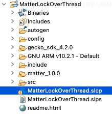
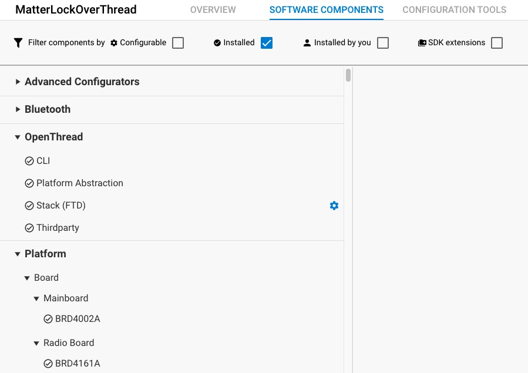
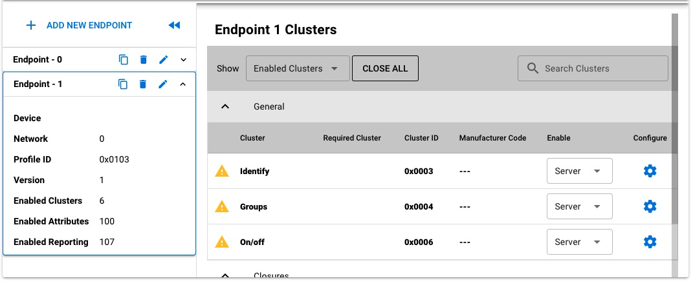

Modifying a Matter Application in Simplicity Studio
To begin configuring your project, click the [project name].slcp tab. If the tab is not open, double-click the [project name].slcp file for your project in the Project Explorer view.

This opens the Project Configurator. From the Software Components tab you can add, remove and configure components included in your project.

More information about the use of the Simplicity Studio IDE can be found online in the Simplicity Studio Documentation.
Click on the
SDK Extensionsfilter in the top filter bar to see all the Matter-related components.
Using the ZCL Advanced Configurator to modify your project
If you have been developing Matter you are probably familiar with or at least aware of the ZCL Advanced Platform (ZAP) tool. The ZAP tool is used to modify the clusters used in your Matter application. Simplicity Studio ships with an instance of the ZAP tool and it can be used here to modify your existing cluster configuration for your Matter application. To launch ZAP inside Simplicity Studio click the Configuration Tools tab and click Open on the Zigbee Cluster Configurator card. This will launch the ZAP tool with your cluster configuration for your Matter application.

Using the ZAP tool inside Simplicity Studio you can modify the Endpoints, Clusters, Attributes and Commands used by your application. Once you have made the changes you desire in the ZAP interface, click Generate to save your configuration out to your project.